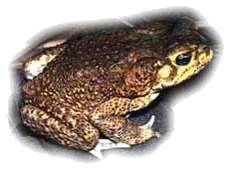

<body text="#000000" bgcolor="#FFFFFF" background="bg311.gif">

Ага — одна из самых крупных жаб: длина её тела достигает 24 см (обычно 15—17 см), вес — более килограмма. Самцы немного мельче самок. Кожа у аги сильно ороговевшая, бородавчатая. Окраска неяркая: сверху тёмно-бурая или серая с большими тёмными пятнами; брюхо желтоватое, с частыми бурыми пятнышками. Характерны большие околоушные железы по бокам головы, которые вырабатывают ядовитый секрет, и костные надглазничные гребни. Кожистые перепонки имеются только на задних лапах. Подобно другим ночным видам, у жабы-аги горизонтальные зрачки.Естественный ареал жабы-аги — от реки Рио-Гранде в Техасе до центральной Амазонии и северо-восточного Перу. Помимо этого, агу для борьбы с насекомыми-вредителями специально завезли на восточное побережье Австралии (главным образом, восточный Квинсленд и побережье Нового Южного Уэльса), в южную Флориду, на Папуа-Новую Гвинею, Филиппины, японские острова Огасавара и Рюкю и на многие Карибские и тихоокеанские острова, включая Гавайи (в 1935 г.) и Фиджи. Ага может жить в диапазоне температур 5—40 °C.Жабы-аги встречаются от песчаных приморских дюн до опушек тропических лесов и мангровых зарослей. В отличие от других земноводных они постоянно встречаются в солоноватых водах устьев рек по побережью и на островах. За это ага и получила своё научное название — Bufo marinus, «морская жаба». Сухая, ороговевшая кожа аги плохо пригодна для газообмена, и, как следствие, её лёгкие — одни из самых развитых среди амфибий. Ага может пережить потерю запасов воды в теле до 50 %. Как и все жабы, день она предпочитает проводить в убежищах, выходя на охоту в сумерках. Образ жизни в основном одиночный. Передвигается ага короткими быстрыми прыжками. Занимая оборонительную позицию, раздуваются. На взрослых аг охотятся крокодилы, пресноводные лангусты, водяные крысы, вороны, цапли и прочие животные, которые невосприимчивы к их яду. Головастиков поедают нимфы стрекоз, водные жуки, некоторые черепахи и змеи. Многие хищники съедают только язык жабы, либо выедают живот, который содержит менее ядовитые внутренние органы.Личинки аги чёрного цвета и непропорционально малы по сравнению со взрослыми особями. Головастики питаются водорослями и другими водными растениями, которые они соскабливают с помощью пяти рядов зубов. Крупные головастики иногда поедают икру других аг. Метаморфоз происходит через 2—20 недель после вылупления личинок (в зависимости от питания и температуры воды). Жабята, только что прошедшие метаморфоз, также очень мелкие — всего около 1—1,5 см. После метаморфоза молодые жабы покидают водоём и порой в больших количествах скапливаются на берегу. Половое созревание наступает в возрасте 1—1,5 лет. Живут аги до 10 лет (в природе) и до 15 лет (в неволе). Только 0,5 % жаб, вылупившихся из икринок, доживает до репродуктивного возраста.Взрослые особи всеядны, что нехарактерно для жаб: они поедают членистоногих и других беспозвоночных (пчёлы, жуки, многоножки, тараканы, саранча, муравьи, улитки), но также и других земноводных, мелких ящериц, птенцов и зверьков размером с мышь. Не брезгуют падалью и отбросами. На морских побережьях поедают крабов и медуз.